Segmentation
Manual Segmentation
Este módulo é usado para especificar segmentos (estruturas de interesse) em imagens 2D/3D/4D. Algumas das ferramentas imitam uma interface de pintura, como o Photoshop ou o GIMP, mas operam em matrizes 3D de voxels em vez de pixels 2D. O módulo oferece edição de segmentos sobrepostos, exibição tanto em visualizações 2D quanto 3D, opções de visualização detalhadas, edição em visualizações 3D, criação de segmentações por interpolação ou extrapolação em algumas fatias, e edição em fatias em qualquer orientação.
O Segment Editor não edita volumes de mapas de rótulos, mas as segmentações podem ser facilmente convertidas para/partir de volumes de mapas de rótulos usando a seção Explorer e utilizando o menu do botão secundário do mouse.
Segmentação e Segmento
O resultado de uma segmentação é armazenado no nó segmentation no GeoSlicer. Um nó de segmentação consiste em vários segmentos.
Um segmento especifica a região para uma estrutura única. Cada segmento possui um número de propriedades, como nome, cor de exibição preferencial, descrição do conteúdo (capaz de armazenar entradas codificadas padrão DICOM) e propriedades personalizadas. Os segmentos podem se sobrepor no espaço.
Representação de rótulos em mapa binário
A representação em mapa binário de rótulos é provavelmente a representação mais comumente usada porque é a mais fácil de editar. A maioria dos softwares que utilizam essa representação armazena todos os segmentos em uma única matriz 3D, portanto, cada voxel pode pertencer a um único segmento: os segmentos não podem se sobrepor. No GeoSlicer, a sobreposição entre segmentos é permitida. Para armazenar segmentos sobrepostos em mapas binários, os segmentos são organizados em camadas. Cada camada é armazenada internamente como um volume 3D separado, e um volume pode ser compartilhado entre vários segmentos não sobrepostos para economizar memória.
Em uma segmentação com a representação de origem definida como mapa binário, cada camada pode ter geometria diferente (origem, espaçamento, direções dos eixos, extensões) temporariamente - para permitir mover segmentos entre segmentações sem perda de qualidade desnecessária (cada reamostragem de um mapa binário pode levar a pequenas mudanças). Todas as camadas são forçadas a ter a mesma geometria durante certas operações de edição e quando a segmentação é salva em arquivo.
Painéis e sua utilização
| 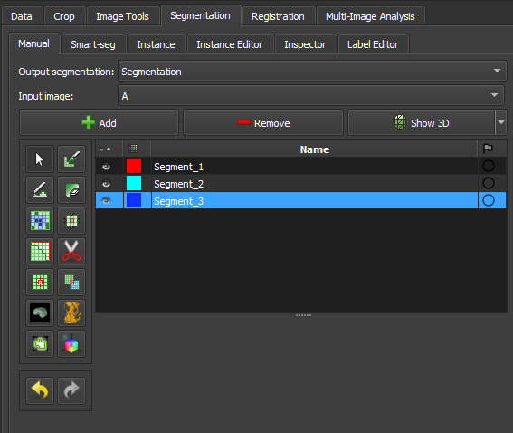 |
|---|
| Figura 1: Apresentação do módulo segment editor. |
Principais opções
-
Segmentação: escolha a segmentação a ser editada.
-
Volume de origem: escolha o volume a ser segmentado. O volume de origem selecionado na primeira vez após a segmentação ser criada é usado para determinar a geometria de representação do labelmap da segmentação (extensão, resolução, direções dos eixos, origem). O volume de origem é usado por todos os efeitos do editor que utilizam a intensidade do volume segmentado (por exemplo, limite, rastreamento de nível). O volume de origem pode ser alterado a qualquer momento durante o processo de segmentação.
-
Adicionar: Adicione um novo segmento à segmentação e selecione-o.
-
Remover: selecione o segmento que deseja excluir e clique em Remover segmento para excluir da segmentação.
-
Mostrar 3D: exiba sua segmentação no visualizador 3D. Este é um botão de alternância. Quando ativado, a superfície é criada e atualizada automaticamente conforme o usuário segmenta. Quando desligado, a conversão não é contínua e o processo de segmentação é mais rápido. Para alterar os parâmetros de criação de superfície: clique na seta ao lado do botão siga para a opção "Smoothing factor" e na barra de valor para editar um valor de parâmetro de conversão. Definir o fator de suavização como 0 desativa a suavização, tornando as atualizações muito mais rápidas. Defina o fator de suavização como 0,1 para suavização fraca e 0,5 ou maior para suavização mais forte.
Tabela de segmentos
Esta tabela exibe a lista de todos os segmentos.
Colunas da tabela:
-
Visibilidade (ícone de olho): Alterna a visibilidade do segmento. Para personalizar a visualização: abra os controles de visualização de fatia (clique nos ícones de botão e seta dupla na parte superior de um visualizador de fatia) ou vá para o módulo Segmentações.
-
Amostra de cores: defina a cor e atribua o segmento à terminologia padronizada.
-
Estado (ícone de bandeira): Esta coluna pode ser usada para definir o status de edição de cada segmento que pode ser usado para filtrar a tabela ou marcar segmentos para processamento posterior. Não iniciado: estado inicial padrão, indica que a edição ainda não ocorreu. Em andamento: quando um segmento “não iniciado” é editado, seu estado é automaticamente alterado para este Concluído: o usuário pode selecionar manualmente este estado para indicar que o segmentat está completo Sinalizado: o usuário pode selecionar manualmente esse estado para qualquer finalidade personalizada, por exemplo, para chamar a atenção de um revisor especialista para o segmento
Seção de efeitos
| 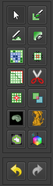 |
|---|
| Figura 2: Seção de efeitos do segment editor. |
-
Barra de ferramentas de efeitos: Selecione o efeito desejado aqui. Veja abaixo mais informações sobre cada efeito.
-
Opções: As opções para o efeito selecionado serão exibidas aqui.
-
Desfazer/Refazer: O módulo salva o estado da segmentação antes de cada efeito ser aplicado. Isso é útil para experimentação e correção de erros. Por padrão, os últimos 10 estados são lembrados.
Efeitos
Os efeitos operam clicando no botão Aplicar na seção de opções do efeito ou clicando e/ou arrastando nas visualizações de fatias ou 3D.
 Pintura
Pintura
-
Escolha o raio (em milímetros) do pincel a ser aplicado.
-
Clique com o botão esquerdo para aplicar um círculo único.
-
Clique com o botão esquerdo e arraste para preencher uma região.
-
Uma trilha de círculos é deixada, que é aplicada quando o botão do mouse é liberado.
-
O modo Esfera aplica o raio às fatias acima e abaixo da fatia atual.
 Desenho
Desenho
-
Clique com o botão esquerdo para criar pontos individuais de um contorno.
-
Arraste com o botão esquerdo para criar uma linha contínua de pontos.
-
Clique duas vezes com o botão esquerdo para adicionar um ponto e preencher o contorno. Alternativamente, clique com o botão direito para preencher o contorno atual sem adicionar mais pontos.
Nota
O efeito Tesoura também pode ser usado para desenhar. O efeito Tesoura funciona tanto em visualizações de fatias quanto em 3D, pode ser configurado para desenhar em mais de uma fatia por vez, pode apagar também, pode ser restrito a desenhar linhas horizontais/verticais (usando o modo retângulo), etc.
 Apagar
Apagar
Semelhante ao efeito Pintura, mas as regiões destacadas são removidas do segmento selecionado em vez de adicionadas.
Se a Máscara / Área Editável estiver definida para um segmento específico, a região destacada é removida do segmento selecionado e adicionada ao segmento de máscara. Isso é útil quando uma parte de um segmento precisa ser separada em outro segmento.
 Rastreamento de Nível
Rastreamento de Nível
-
Mover o mouse define um contorno onde os pixels têm o mesmo valor de fundo que o pixel de fundo atual.
-
Clicar com o botão esquerdo aplica esse contorno ao mapa de rótulos.
 Crescer a partir de sementes
Crescer a partir de sementes
Desenhe o segmento dentro de cada estrutura anatômica. Este método começará a partir dessas "sementes" e as expandirá para alcançar a segmentação completa.
-
Inicializar: Clique neste botão após a segmentação inicial ser concluída (usando outros efeitos de editor). O cálculo inicial pode levar mais tempo do que as atualizações subsequentes. O volume de origem e o método de preenchimento automático serão bloqueados após a inicialização, portanto, se algum desses precisar ser alterado, clique em Cancelar e inicialize novamente.
-
Atualizar: Atualize a segmentação concluída com base nas entradas alteradas.
-
Atualização automática: ative esta opção para atualizar automaticamente a visualização do resultado quando a segmentação for alterada.
-
Cancelar: Remover visualização do resultado. As sementes são mantidas inalteradas, portanto, os parâmetros podem ser alterados e a segmentação pode ser reiniciada clicando em Inicializar.
-
Aplicar: Substitua os segmentos de sementes pelos resultados visualizados.
Notas:
-
Apenas segmentos visíveis são usados por este efeito.
-
Pelo menos dois segmentos são necessários.
-
Se uma parte de um segmento for apagada ou a pintura for removida usando Desfazer (e não for substituída por outro segmento), recomenda-se cancelar e inicializar novamente. A razão é que o efeito de adicionar mais informações (pintar mais sementes) pode ser propagado para toda a segmentação, mas remover informações (remover algumas regiões de sementes) não mudará a segmentação completa.
-
O método usa uma versão aprimorada do algoritmo grow-cut descrito em Liangjia Zhu, Ivan Kolesov, Yi Gao, Ron Kikinis, Allen Tannenbaum. An Effective Interactive Medical Image Segmentation Method Using Fast GrowCut, International Conference on Medical Image Computing and Computer Assisted Intervention (MICCAI), Interactive Medical Image Computing Workshop, 2014.
 Margem
Margem
Aumenta ou diminui o segmento selecionado pela margem especificada.
Ao habilitar Aplicar aos segmentos visíveis, todos os segmentos visíveis da segmentação serão processados (na ordem da lista de segmentos).
 Suavização
Suavização
Suaviza segmentos preenchendo buracos e/ou removendo extrusões.
Por padrão, o segmento atual será Suavizado. Ao habilitar Aplicar aos segmentos visíveis, todos os segmentos visíveis da segmentação serão suavizado (na ordem da lista de segmentos). Esta operação pode ser demorada para segmentações complexas. O método Suavização conjunta sempre suaviza todos os segmentos visíveis.
Clicando no botão Aplicar, toda a segmentação é suavizada. Para suavizar uma região específica, clique e arraste com o botão esquerdo em qualquer visualização de fatia ou 3D. O mesmo método e força de suavização são usados tanto no modo de segmentação inteira quanto no modo de suavização por região (o tamanho do pincel não afeta a força da Suavização, apenas facilita a designação de uma região maior).
Métodos disponíveis:
-
Mediana: remove pequenas extrusões e preenche pequenos espaços enquanto mantém os contornos suaves praticamente inalterados. Aplicado apenas ao segmento selecionado.
-
Abertura: remove extrusões menores do que o tamanho do kernel especificado. Não adiciona nada ao segmento. Aplicado apenas ao segmento selecionado.
-
Fechamento: preenche cantos afiados e buracos menores do que o tamanho do kernel especificado. Não remove nada do segmento. Aplicado apenas ao segmento selecionado.
-
Gaussiano: suaviza todos os detalhes. A suavização mais forte possível, mas tende a diminuir o segmento. Aplicado apenas ao segmento selecionado.
-
Suavização conjunto: suaviza múltiplos segmentos de uma vez, preservando a interface estanque entre eles. Se os segmentos se sobrepuserem, o segmento mais alto na tabela de segmentos terá prioridade. Aplicado a todos os segmentos visíveis.
 Tesoura
Tesoura
Recorta segmentos para a região especificada ou preenche regiões de um segmento (geralmente usado com mascaramento). As regiões podem ser desenhadas tanto na visualização de fatia quanto nas visualizações 3D.
-
Clique com o botão esquerdo para começar a desenhar (forma livre ou círculo/retângulo elástico)
-
Solte o botão para aplicar
Ao habilitar Aplicar aos segmentos visíveis, todos os segmentos visíveis da segmentação serão processados (na ordem da lista de segmentos).
 Ilhas
Ilhas
Use esta ferramenta para processar “ilhas”, ou seja, regiões conectadas que são definidas como grupos de voxels não vazios que se tocam, mas são cercados por voxels vazios.
-
Manter maior ilha: mantém a maior região conectada. -
Remover pequenas ilhas: mantém todas as regiões conectadas que são maiores que otamanho mínimo. -
Dividir ilhas em segmentos: cria um segmento único para cada região conectada do segmento selecionado. -
Manter ilha selecionada: após selecionar este modo, clique em uma área não vazia na visualização de fatias para manter essa região e remover todas as outras regiões. -
Remover ilha selecionada: após selecionar este modo, clique em uma área não vazia na visualização de fatias para remover essa região e preservar todas as outras regiões. -
Adicionar ilha selecionada: após selecionar este modo, clique em uma área vazia na visualização de fatias para adicionar essa região vazia ao segmento (preencher buraco).
 Operadores lógicos
Operadores lógicos
Aplicar operações básicas de copiar, limpar, preencher e Booleanas ao(s) segmento(s) selecionado(s). Veja mais detalhes sobre os métodos clicando em “Mostrar detalhes” na descrição do efeito no Editor de Segmentos.
 Volume de máscara
Volume de máscara
Apague dentro/fora de um segmento em um volume ou crie uma máscara binária. O resultado pode ser salvo em um novo volume ou sobrescrever o volume de entrada. Isso é útil para remover detalhes irrelevantes de uma imagem ou criar máscaras para operações de processamento de imagem (como registro ou correção de intensidade).
-
Operação:-
Preencher dentro: define todos os voxels do volume selecionado para oValor de preenchimentoespecificado dentro do segmento selecionado. -
Preencher fora: define todos os voxels do volume selecionado para oValor de preenchimentoespecificado fora do segmento selecionado. -
Preencher dentro e fora: cria um volume de mapa de etiquetas binário como saída, preenchido com oValor de preenchimento forae oValor de preenchimento dentro. A maioria das operações de processamento de imagem exige que a região de fundo (fora, ignorada) seja preenchida com o valor 0.
-
-
Borda suave: se definido como >0, a transição entre dentro/fora da máscara é gradual. O valor especifica o desvio padrão da função de desfoque gaussiano. Valores maiores resultam em uma transição mais suave. -
Volume de entrada: voxels deste volume serão usados como entrada para a máscara. A geometria e o tipo de voxel do volume de saída serão os mesmos que os deste volume. -
Volume de saída: este volume armazenará o resultado da máscara. Embora possa ser o mesmo que o volume de entrada, geralmente é melhor usar um volume de saída diferente, porque assim as opções podem ser ajustadas e a máscara pode ser recalculada várias vezes.
Limiar de cores
Esse efeito de edição de segmentação chamado "Color threshold", permite a segmentação de imagens com base em intervalos de cores definidos pelo usuário. O efeito pode operar em modos de cor HSV ou RGB, permitindo ajustes nos componentes de matiz, saturação e valor. Ainda possui ajuste nos níveis de vermelho, verde e azul. O efeito oferece uma visualização em tempo real da segmentação, utilizando um pulso de pré-visualização para ajudar o usuário a refinar os parâmetros antes de aplicar as alterações permanentemente. Além disso, o efeito inclui funcionalidades avançadas, como a conversão de espaços de cor e a manipulação de intervalos circulares, possibilitando uma segmentação precisa e customizada.
Conectividade
Esse efeito de "Conectividade" permite a seleção de segmentos no Geoslicer, permitindo aos usuários calcular regiões conectadas dentro de um segmento em uma direção específica. O efeito inclui parâmetros configuráveis como saltos de conectividade, direção e nome de saída, tornando-o uma ferramenta versátil para tarefas detalhadas de segmentação. Ele lida de forma eficiente com a análise de componentes conectados e gera um novo segmento baseado nas configurações definidas pelo usuário.
Remoção de Borda
Remove as bordas dos segmentos visíveis usando um filtro de detecção de bordas. Apenas os segmentos visíveis são modificados no processo.
- Filter: Apenas magnitude de gradiente até o momento.
- Threshold adjustment: Ajusta o limiar para encontrar uma borda adequada.
- Keep filter result: Marque esta opção para manter o resultado do filtro como um novo volume, para inspeção.
 Expandir Segmentos
Expandir Segmentos
Aplica o processo de watershed para expandir os segmentos visíveis, preenchendo os espaços vazios da segmentação. Os segmentos visíveis selecionados são usados como sementes, ou mínimos, a partir dos quais são expandidos.
Primeiro plano inteligente
Segmenta automaticamente a área útil de uma imagem ou volume, isto é, a região que corresponde de fato à amostra, rejeitando as regiões de borda. Habilitando-se o recurso de fragmentação (atualmente disponível apenas para lâminas), eventuais fissuras entre fragmentos de rocha também deixam de ser consideradas área util. Este efeito é conveniente para fluxos de trabalho em que as áreas adjacentes à rocha possam influenciar negativamente, como, por exemplo, determinar a taxa de porosidade da amostra.
Múltiplos limiares
O efeito de multiple threshold, apresentado nos ambientes Volumes, Image Log, Core e Multiscale, permite ao usuário segmentar um volume 3D a partir de múltiplos valores de limiares. Dependendo da quantidade de segmentos selecionados, um histograma com limiares aparece colorido na interface. Cada segmento será separado pelo limiar, começando o próximo segmento em um limiar levemente acima na escala de cinza. Dessa forma, pode-se segmentar facilmente a imagem a partir da escala de cinza.

-
Operação:-
Preencher internamente: segmenta toda a área útil da imagem/volume; -
Apagar externamente: dado um segmento qualquer já preenchido, exclui toda sua região que resida fora da área útil.
-
-
Fragmentação:-
Dividir: habilita/desabilita o recurso de fragmentação. Recomendado apenas para imagens de lâminas de luz polarizada (PP). Uma vez habilitado, permite escolher entre:Manter todos: considera todos os fragmentos como área útil;Filtrar os N maiores: apenas os N fragmentos de maior área serão preservados, sendo N o valor especificado pelo usuário.
-
AI Segmenter
O módulo MicroCT Segmenter oferece a opção de Model Training, que realiza a segmentação de uma amostra inteira a partir de uma anotação inicial simples. Com base nessa anotação, diferentes métodos treinam um modelo e inferem o resultado em toda a imagem ou em uma região de interesse (SOI). O modelo treinado pode ser salvo e reutilizado em outras imagens.
Método Random-Forest
O Random-Forest é um método que constrói múltiplas árvores de decisão durante o treinamento para criar um modelo robusto. A classificação final é determinada pela maioria dos votos das árvores. Para este método, é possível selecionar diferentes features (características) extraídas da imagem para o treinamento.
Seleção de características (features)
- Raw input image: Adiciona a própria imagem como uma das entradas.
- Gaussian filter: Aplica um kernel gaussiano de raio escolhido como um filtro na imagem.
| 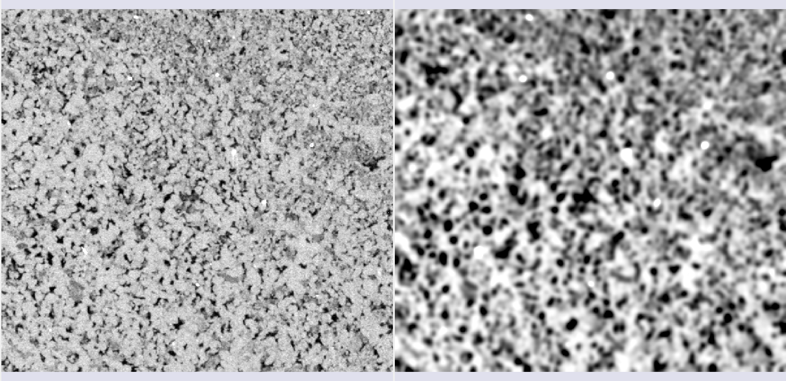 |
|---|
| Figura 1: Filtro gaussiano. |
- Winvar filter: Filtro baseado na variância, calcula \(\left\lt x^2\right\gt-\left\lt x\right\gt^2\) dentro de um kernel de raio escolhido.
| 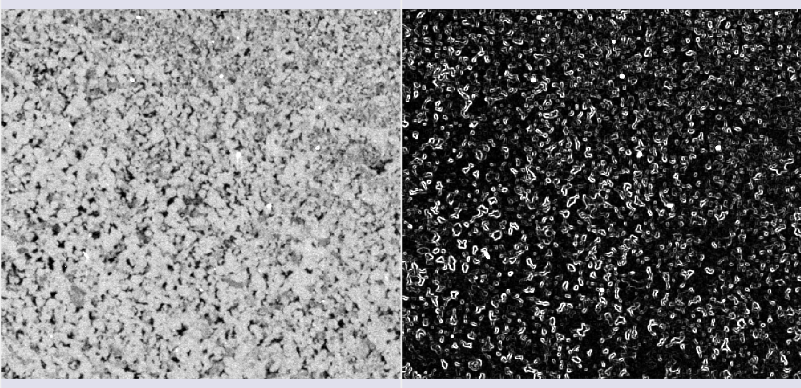 |
|---|
| Figura 2: Filtro winvar. |
- Gabor filters: Calculados em direções \(\theta\) igualmente espaçadas, esses filtros são compostos de uma parte gaussiana e uma parte senoidal. Em 2D, a fórmula é:
 |
|---|
| Figura 3: Filtro Gabor em uma das direções \(\theta\). |
- Minkowsky functionals: Parâmetros morfológicos que descrevem a geometria dos dados, associados a volume, superfície, curvatura média e característica de Euler.
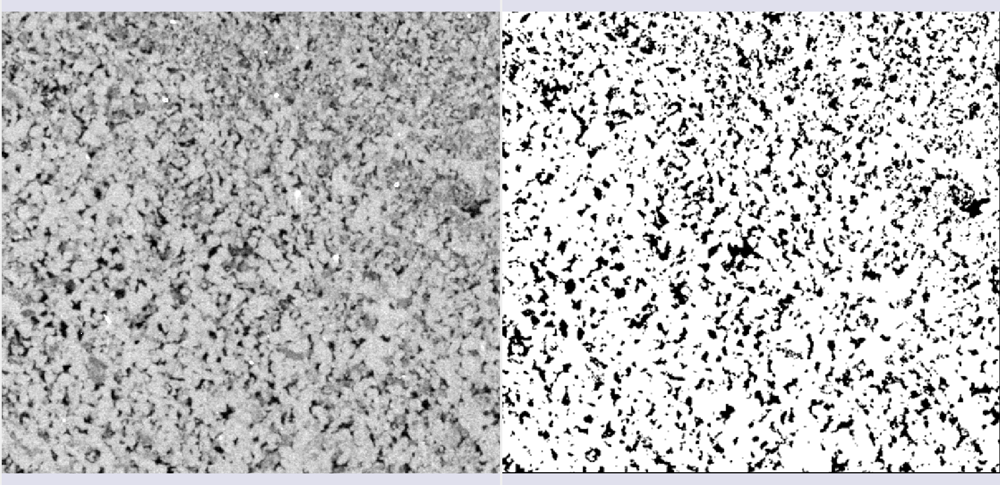  |
|---|
| Figura 4: Filtros Minkowsky. |
- Variogram range: Mede a variação média dos valores em função da distância. O range é a distância onde a variação é máxima. É útil para diferenciar texturas e granulometrias.
 |
|---|
| Figura 5: Variogram range. |
Método Inferência Bayesiana
Este método utiliza a regra de Bayes para classificar os pixels da imagem, atualizando as probabilidades de um pixel pertencer a uma classe com base nas anotações.
A abordagem no GeoSlicer assume uma Distribuição Normal Multivariada para a função de verossimilhança, onde a média \(\mu_s\) e a matriz de covariância \(\Sigma_s\) de cada segmento são calculadas a partir das anotações:
Onde \(x_p\) é o vetor de pixels em uma janela, e \(\mu_s\) e \(\Sigma_s\) são a média e a covariância do segmento \(s\).
A inferência da probabilidade de cada segmento para um pixel é obtida pela regra de Bayes, e o segmento que maximiza essa probabilidade é escolhido.
Para otimizar o desempenho, são aplicados alguns tratamentos, como a transformação de percentil em imagens de MicroCT e a conversão para o formato HSV em imagens de lâminas delgadas. Além disso, para acelerar o processo, é possível calcular a covariância de forma esparsa, utilizando apenas os eixos ou planos principais, o que é especialmente útil em 3D.
Abaixo, alguns resultados da aplicação do método em imagens de tomografia e lâminas:
 |
|---|
| Figura 6: Segmentação semi-automática usando inferência Bayesiana em dados de MicroCT. |
| 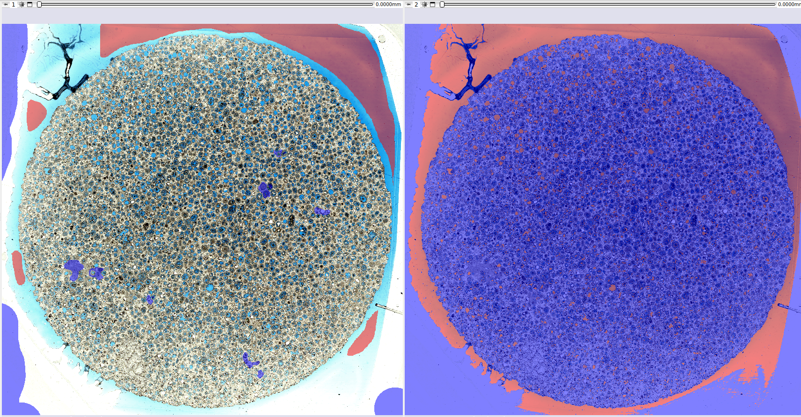 |
|---|
| Figura 7: Segmentação semi-automática usando inferência Bayesiana em dados de lâminas. |
Modelos Pré-treinados
O GeoSlicer oferece modelos pré-treinados baseados na arquitetura U-Net para resolver dois problemas comuns na microtomografia de rochas: a segmentação binária (poro/não-poro) e a segmentação basins (múltiplos minerais).
Treinamento
O treinamento dos modelos foi realizado com um vasto conjunto de dados (68 volumes para o modelo binário e 106 para o basins), aplicando uma transformação linear de histograma para facilitar a generalização. Os volumes foram recortados em subvolumes de 128³ voxels, e uma porção de 75% deles sofreu transformações aleatórias (aumento de dados) para melhorar a robustez do modelo. Para lidar com o desbalanceamento de classes (poros são menos comuns), foi utilizada a função de custo de Tversky, que ajusta a sensibilidade do modelo para classes minoritárias, melhorando a precisão na detecção de poros.
Resultados
Os modelos pré-treinados apresentam resultados de alta qualidade. O modelo de segmentação binária é especialmente preciso na identificação de poros, enquanto o modelo basins oferece uma segmentação completa dos diferentes minerais.
Segmentação Binária
| 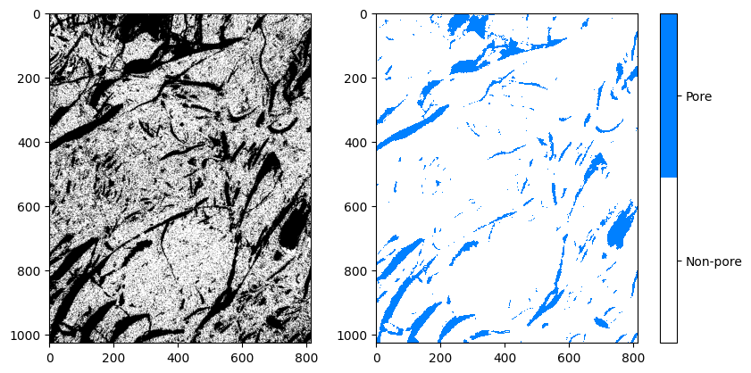 |
|---|
| Figura 8: Comparação entre a imagem original, a anotação e o resultado da segmentação binária. |
Segmentação Basins
 |
|---|
| Figura 9: Comparação entre a imagem original, a anotação e o resultado da segmentação basins. |
Referências
- SCHMIDT, U. et al. (2018). Cell detection with star-convex polygons. In: Medical Image Computing and Computer Assisted Intervention–MICCAI 2018. Springer.
- SALEHI, S. S. M. et al. (2017). Tversky loss function for image segmentation using 3D fully convolutional deep networks. In: Machine Learning in Medical Imaging. Springer.
- WEIGERT, M. et al. (2020). Star-convex polyhedra for 3D object detection and segmentation in microscopy. In: Proceedings of the IEEE/CVF winter conference on applications of computer vision.
- BAI, M. & URTASUN, R. (2017). Deep watershed transform for instance segmentation. In: Proceedings of the IEEE conference on computer vision and pattern recognition.
- HE, K. et al. (2017). Mask r-cnn. In: Proceedings of the IEEE international conference on computer vision.
- RONNEBERGER, O. et al. (2015). U-net: Convolutional networks for biomedical image segmentation. In: Medical Image Computing and Computer-Assisted Intervention–MICCAI 2015. Springer.
Segment Inspector
Este módulo fornece vários métodos para analisar uma imagem segmentada. Particularmente, os algoritmos Watershed e Separate objects permitem fragmentar uma segmentação em várias partições, ou vários segmentos. Geralmente é aplicado à segmentação do espaço poroso para calcular as métricas de cada elemento poroso. A entrada é um nó de segmentação ou volume de labelmap, uma região de interesse (definida por um nó de segmentação) e a imagem/volume mestre. A saída é um labelmap onde cada partição (elemento poro) está em uma cor diferente, uma tabela com parâmetros globais e uma tabela com as diferentes métricas para cada partição.
Painéis e sua utilização
| 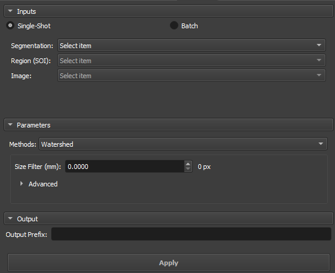 |
|---|
| Figura 1: Apresentação do módulo Segment Inspector. |
Principais opções
A interface do módulo Segment Inspector é composta por Inputs, Parameters e Output
Single input
| 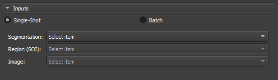 |
|---|
| Figura 2: Apresentação dos inputs no módulo Segment Inspector. |
-
Segmentation: Input para a segmentação utilizada na partição.
-
Region SOI: Escolha Uma segmentação de interresse que contenha ao menos uma parte da segmentação utilizada em Segmentation.
-
Image: Campo preenchido automaticamente com o nodo de referência da segmentação utilizada em Segmentation.
Attributes
| 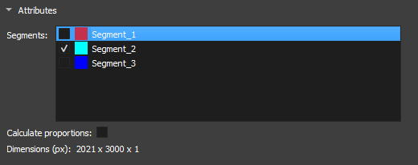 |
|---|
| Figura 3: Atributos de segmentos no módulo Segment Inspector. |
-
Segments: Segmentos contidos na segmentação selecionada em Segmentation. A lista informa sobre a visualização do segmento pelo icone do olho. Para a inicialização do metodo de fragmentação um segmento deve ser selecionado.
-
Calculate proportions: Checkbox para apresentar as proporções de cada segmento na imagem.
-
Dimension(px): Apresenta as dimensões da imagem selecionada.
Parâmetros e Métodos
Watershed
O algoritmo de Watershed funciona simulando a expansão de "bacias hidrográficas" a partir de pontos marcados como mínimos locais. À medida que a "água" preenche os vales, ela define as fronteiras entre diferentes regiões. Essa abordagem é amplamente utilizada em aplicações onde é necessário separar objetos ou poros em materiais, aproveitando os contrastes entre regiões.
| 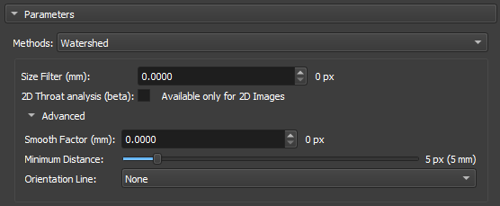 |
|---|
| Figura 4: Watershed no módulo Segment Inspector. |
-
Size Filter(mm): Controla o alcance máximo de segmentação, influenciando diretamente o tamanho e a conectividade das regiões segmentadas. Valores pequenos são Usados quando você deseja segmentar muitos detalhes finos em contrapartida Valores grandes são usados quando o foco é em grandes áreas ou objetos conectados.
-
2D throat analysis(beta): Adiciona métricas de analise de gargantas 2d no report.
-
Smooth factor: Parâmetro que ajusta o grau de suavidade nas bordas das regiões segmentadas, permitindo controle entre a preservação dos detalhes e a redução de ruído ou irregularidades. Com Fatores altos a segmentação será mais suave e simplificada, mas com perda de pequenos detalhes.
-
Minimun Distance: parâmetro que determina a menor distância permitida entre dois máximos locais ou objetos segmentados. Um valor maior deste parâmetro fundirá objetos próximos, simplificando a segmentação, enquanto um valor menor permitirá a separação de objetos mais próximos, resultando em uma segmentação mais detalhada.
-
Orientation Line: O parâmetro de orientação permite que o algoritmo alinhe-se adequadamente com as características da imagem, melhorando a precisão da segmentação
Separate Objects
O método de segmentação por "Separate Objects " identifica regiões conectadas em uma matriz binária que representam objetos de informação. Este processo é especialmente útil em análise de porosidade, onde é importante distinguir diferentes regiões conectadas dentro de um volume.
| 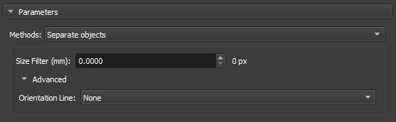 |
|---|
| Figura 5: Separate Objects no módulo Segment Inspector. |
-
Size Filter(mm): Controla o alcance máximo de segmentação, influenciando diretamente o tamanho e a conectividade das regiões segmentadas. Valores pequenos são Usados quando você deseja segmentar muitos detalhes finos em contrapartida Valores grandes são usados quando o foco é em grandes áreas ou objetos conectados.
-
Orientation Line: O parâmetro de orientação permite que o algoritmo alinhe-se adequadamente com as características da imagem, melhorando a precisão da segmentação
GPU Watershed
A técnica de Deep Watershed combina o conceito tradicional de Watershed com redes neurais profundas para obter uma segmentação mais precisa e robusta. Utilizando a força de aprendizado profundo, o método aprimora a detecção de limites e objetos em cenários complexos, como a análise de materiais porosos com múltiplos níveis de sobreposição. Essa abordagem é particularmente eficaz para lidar com volumes tridimensionais e para realizar segmentações precisas em imagens ruidosas.
| 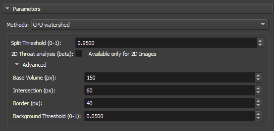 |
|---|
| Figura 6: GPU Watershed no módulo Segment Inspector. |
-
Split Threshold(0-1): Controla o alcance máximo de segmentação, influenciando diretamente o tamanho e a conectividade das regiões segmentadas. Valores pequenos são usados quando você deseja segmentar muitos detalhes finos em contrapartida valores grandes são usados quando o foco é em grandes áreas ou objetos conectados.
-
2D throat analysis(beta): Adiciona métricas de analise de gargantas 2d no report.
-
Base volume (px): Esse parâmetro representa um valor base que pode ser relacionado ao tamanho ou à escala do volume que está sendo processado. Ele serve como uma referência para calcular a profundidade ou as camadas do volume que serão analisadas.
-
Intersection (px):Esse parâmetro é usado para ajustar o quanto as regiões dentro do volume podem se sobrepor umas às outras durante a segmentação.
-
Border (px): Esse parâmetro define o tamanho ou a espessura das bordas que serão consideradas ao calcular as camadas de profundidade no volume.
-
Background Threshold(0-1): Atua como um ponto de corte. Todos os valores abaixo desse limiar (threshold) são considerados como pertencentes ao fundo (ou background), enquanto valores acima do limiar são considerados como partes de objetos ou regiões significativas dentro da imagem ou volume.
Transitions Analysis
A Análise de Transições se concentra em examinar as mudanças entre regiões ou segmentos de uma imagem. Este método é empregado principalmente para estudar a mineralogia de amostras.
| 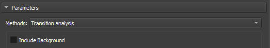 |
|---|
| Figura 7: Transitions Analysis no módulo Segment Inspector. |
- Include Background: Usa as dimensões totais da imagem de entrada para análise.
Basic Petrophysics
| Figura 8: Transitions Analysis no módulo Segment Inspector. |
- Include Background: Usa as dimensões totais da imagem de entrada para análise.
Output
Digite um nome para ser usado como prefixo para o objeto de resultados (mapa de rótulos onde cada partição (elemento de poro) está em uma cor diferente, uma tabela com parâmetros globais e uma tabela com as diferentes métricas para cada partição).
Propriedades / Métricas:
- Label: identificação do rótulo da partição.
- mean: valor médio da imagem/volume de entrada dentro da região da partição (poro/grão).
- median: valor mediano da imagem/volume de entrada dentro da região da partição (poro/grão).
- stddev: Desvio padrão do valor da imagem/volume de entrada dentro da região da partição (poro/grão).
- voxelCount: Número total de pixels/vóxels da região da partição (poro/grão).
- area: Área total da partição (poro/grão). Unidade: mm².
- angle: Ângulo em graus (entre 270 e 90) relacionado à linha de orientação (opcional, se nenhuma linha for selecionada, a orientação de referência é a horizontal superior).
- max_feret: Maior eixo de Feret. Unidade: mm.
- min_feret: Menor eixo de Feret. Unidade: mm.
- mean_feret: Média dos eixos mínimo e máximo.
- aspect_ratio: min_feret / max_feret.
- elongation: max_feret / min_feret.
- eccentricity: quadrado(1 - min_feret / max_feret), relacionado à elipse equivalente (0 ≤ e < 1), igual a 0 para círculos.
- ellipse_perimeter: Perímetro da elipse equivalente (elipse equivalente com eixos dados pelos eixos mínimo e máximo de Feret). Unidade: mm.
- ellipse_area: Área da elipse equivalente (elipse equivalente com eixos dados pelos eixos mínimo e máximo de Feret). Unidade: mm².
- ellipse_perimeter_over_ellipse_area: Perímetro da elipse equivalente dividido por sua área.
- perimeter: Perímetro real da partição (poro/grão). Unidade: mm.
- perimeter_over_area: Perímetro real dividido pela área da partição (poro/grão).
- gamma: Arredondamento de uma área calculado como 'gamma = perímetro / (2 * quadrado(PI * área))'.
- pore_size_class: Símbolo/código/id da classe do poro.
- pore_size_class_label: Rótulo da classe do poro.
Definição das classes de poros:
- Microporo: classe = 0, max_feret menor que 0,062 mm.
- Mesoporo muito pequeno: classe = 1, max_feret entre 0,062 e 0,125 mm.
- Mesoporo pequeno: classe = 2, max_feret entre 0,125 e 0,25 mm.
- Mesoporo médio: classe = 3, max_feret entre 0,25 e 0,5 mm.
- Mesoporo grande: classe = 4, max_feret entre 0,5 e 1 mm.
- Mesoporo muito grande: classe = 5, max_feret entre 1 e 4 mm.
- Megaporo pequeno: classe = 6, max_feret entre 4 e 32 mm.
- Megaporo grande: classe = 7, max_feret maior que 32 mm.
LabelMap Editor
Esse módulo permite a edição de labelmaps, tipicamente gerados pelo algoritmo de Watershed no módulo Segment Inspector.
Nem sempre os resultados gerados pelo watershed estão de acordo com as expectativas, esse módulo permite ao usuário fazer uma edição desses resultados rótulo-a-rótulo, mesclando ou dividindo as divisões feitas pelo algoritmo.

O módulo apresenta uma interface com as operações de:
- Merge: Mescla duas labels;
- Auto Split: Tenta dividir uma label em mais de uma parte;
- Slice: Corta a label em uma linha definida pelo usuário;
- Point cut: Corta a label a partir de uma reta que passa por um ponto definido pelo usuário;
A interface também conta com botões de Undo e Redo para voltar atrás ou avançar nas mudanças.
Pore Stats: estatísticas e propriedades de poros e partículas em seção delgada
O módulo Pore Stats oferece recursos para o cálculo de propriedades geológicas de poros em lotes de imagens de seção delgada de rocha, bem como estatísticas descritivas relacionadas. Dado um diretório de entrada contendo imagens relativas a um mesmo poço, o módulo é capaz de segmentar a região porosa, separar os diferentes poros, calcular diferentes propriedades de cada um e salvar relatórios e imagens sumarizando os resultados.
Interface e funcionamento
O módulo está disponível no ambiente Thin Section, na aba Segmentation, sub-aba Pore Stats. A Figura 1 ilustra uma visualização geral do fluxo de funcionamento do módulo, enquanto a Figura 2 mostra a interface do módulo no GeoSlicer e aponta, para cada recurso, a subseção desta seção que o descreve.
| 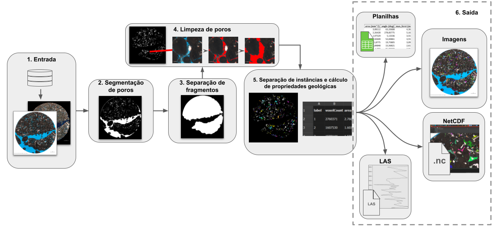 |
|---|
| Figura 1: visualização geral do fluxo de funcionamento do módulo. |
| 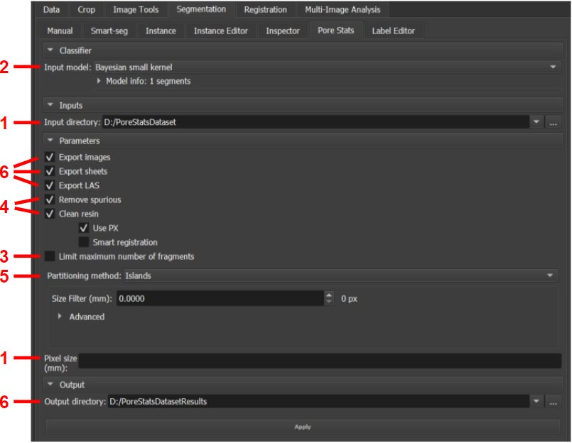 |
|---|
| Figura 2: módulo Pore Stats. |
1. Entrada
O módulo é desenvolvido de modo a iterar sobre todas as imagens válidas que encontrar num dado diretório de entrada. Uma imagem é considerada válida caso o arquivo tenha formato PNG, JPEG ou TIFF e seu nome respeite o seguinte padrão: <poço>_<profundidade-valor>(-índice-opcional)<profundidade-unidade>_<…>_c1.<extensão>. O sufixo c1 se refere à imagens em polarização direta (PP). Opcionalmente, contrapartes em polarização cruzada (PX) que constem no mesmo diretório também podem ser usadas para auxiliar em operações específicas, devendo ter o sufixo c2. Segue um exemplo de diretório de entrada:
Diretório_entrada
|__ ABC-123_3034.00m_2.5x_c1.jpg
|__ ABC-123_3034.00m_2.5x_c2.jpg
|__ ABC-123_3080.0-2m_c1.jpg
|__ ABC-123_3080.0-2m_c2.jpg
|__ ABC-123_3080.0m_c1.jpg
|__ ABC-123_3080.0m_c2.jpg
|__ ABC-123_3126.65m_2.5x_TG_c1.jpg
|__ ABC-123_3126.65m_2.5x_TG_c2.jpg
O exemplo descreve um diretório de entrada com 4 imagens JPEG do poço "ABC-123", correspondentes às profundidades de 3034, 3080 e 3126,65 metros, em ambas as versões PP/c1 e PX/c2. Como existem duas variações correspondentes à mesma profundidade (3080m), um índice opcional ("-2") consta em uma delas. Entre as informações de profundidade e polarização, algumas informações adicionais podem existir entre underlines (como "_2.5x_" e "_TG_").
Além do diretório de entrada, também é necessário especificar a escala das imagens em mm, ou seja, quantos mm são representados pela distância entre um pixel e o pixel subsequente.
O diretório de entrada pode ser definido através do seletor Input directory na interface do módulo, dentro da seção Inputs da interface. Já a escala das imagens deve ser especificada no campo Pixel size (mm), na seção Parameters.
| 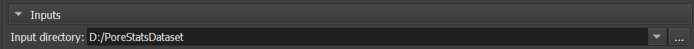 |
|---|
| Figura 3: seletor de diretório de entrada. |
| Figura 4: campo de escala mm/pixel. |
2. Segmentação de poros
Uma vez que uma imagem é carregada, sua região porosa é segmentada através dos modelos pré-treinados disponíveis no GeoSlicer. Neste módulo, 3 modelos são disponibilizados:
- Modelo bayesiano de kernel pequeno;
- Modelo bayesiano de kernel grande;
- Modelo neural convolucional U-Net.
Escolha o modelo através do seletor Input model na seção Classifier. A caixa de informações abaixo do seletor pode ser expandida para maiores detalhes sobre cada modelo.
| 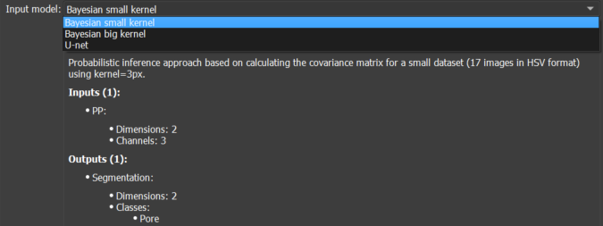 |
|---|
| Figura 5: seletor de modelo de segmentação de poros. |
3. Separação de fragmentos
Muitas imagens possuem grandes regiões "vazias", preenchidas por resina de poro, que são detectadas pelo segmentador mas que não correspondem de fato à porosidade da rocha, mas apenas à região em volta de seu(s) fragmento(s) (vide exemplo da Figura 1). Em alguns casos, não todos mas apenas os N maiores fragmentos da seção de rocha interessam. Para isolar os fragmentos úteis da rocha, a seguinte sequência de operações é aplicada:
- Primeiramente, o maior fragmento, correspondente à toda área da seção, é isolado das bordas da imagem;
- Então, toda porosidade detectada que toque a borda da imagem é também descartada, pois é interpretada como resina de poro visível ao redor da área útil da rocha;
- Por fim, caso seja interessante apenas os N maiores fragmentos, o tamanho (em pixeis) de cada fragmento da área útil restante é medido e apenas os N maiores são mantidos.
O módulo executa a separação de fragmentos automaticamente. Porém, é possível limitar a análise aos N maiores marcando a caixa de seleção Limit maximum number of fragments, na seção Parameters, e definindo o valor de N (entre 1 e 20).
| 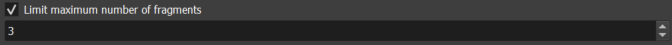 |
|---|
| Figura 6: limitador de fragmentos a serem analisados, do maior para o menor. |
4. Limpeza de poros
Este algoritmo é responsável por aplicar duas operações de "limpeza" na segmentação de poros convencional, que se não realizadas podem impactar negativamente nos resultados finais.
Remoção de poros espúrios
Os segmentadores de poro atuais do GeoSlicer tendem a gerar detecções espúrias em pequenas regiões compreendidas por rocha mas que por efeitos de iluminação/resolução/afins têm coloração parecida com a da resina azul de poro. O módulo executa um modelo capaz de reconhecer essas detecções e diferencia-las das corretas, com base nos valores de pixel dentro de um intervalo em torno do centróide de cada segmento. Todos os poros espúrios detectados são descartados.
Incorporação de bolhas e resíduos na resina de poro
É comum que se formem na resina de poro algumas bolhas de ar e resíduos relacionados. Os segmentadores não detectam esses artefatos, não interpretando-os como área de poro, o que influencia no tamanho e quantidade dos poros detectados. Este módulo visa "limpar" a resina, incluindo essas bolhas e resíduos ao corpo do poro correspondente. Basicamente, alguns critérios devem ser atendidos para que uma região da imagem seja interpretada como bolha/resíduo:
- Ter cor branca ou ter cor azul com pouca intensidade e saturação: em geral, as bolhas são brancas ou, quando cobertas de material, têm um tom de azul quase negro. Os resíduos que eventualmente circundam as bolhas também tem um nível de azul pouco intenso;
- Tocar na resina de poro: a transição entre a resina e os artefatos é normalmente direta e suave. Como o modelo de segmentação de poro detecta bem a região de resina, o artefato precisa tocar nessa região. Consequentemente, o algoritmo atual não consegue detectar casos menos comuns em que o artefato tome 100% da área do poro;
- Ser pouco visível na imagem PX/c2 (se disponível): alguns elementos da rocha podem ser parecidos com os artefatos e também ter contato com a resina. Porém, no geral, os artefatos são pouco ou nada visíveis nas imagens PX/c2, enquanto os demais elementos são geralmente notáveis. Este critério se faz mais efetivo quanto melhor for o registro (alinhamento espacial) entre as imagens PP e PX. O algoritmo tenta corrigir o registro das imagens automaticamente alinhando os centros das imagens. Esta etapa pode ser precedida por uma operação de enquadramento da área útil da rocha, descartando bordas excedentes.
As operações de limpeza são recomendadas, porém podem levar um tempo. Por isso, é possível desabilitá-las desmarcando as caixas de seleção Remove spurious para remoção de poros espúrios e Clean resin para limpeza da resina, na seção Parameters. Caso esta última esteja habilitada, duas outras opções são disponibilizadas:
- Use PX para usar a imagem PX para análise do critério 3;
- Smart registration para decisão automática entre realizar ou não o enquadramento antes do registro automático. Não é recomendada caso a imagens já sejam naturalmente registradas.
| 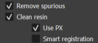 |
|---|
| Figura 7: opções de limpeza de poros espúrios e artefatos na resina de poro |
5. Separação de instâncias e cálculo de propriedades geológicas
Uma vez que a região porosa esteja devidamente segmentada e "limpa", o recurso de Particionamento
do GeoSlicer é utilizado para separação da segmentação em diferentes instâncias de poros e cálculo das propriedades geológicas de cada um. As seguintes propriedades são computadas:
- Área (mm²);
- Ângulo (°);
- Máximo diâmetro de Feret (mm);
- Mínimo diâmetro de Feret (mm);
- Razão de aspecto;
- Alongamento;
- Excentricidade;
- Perímetro da elipse (mm);
- Área da elipse (mm²);
- Elipse: perímetro sobre área (1/mm);
- Perímetro (mm);
- Perímetro sobre área;
- Gamma.
Dentro da seção Parameters, escolha o método de separação através do seletor Partitioning method, entre as opções Islands para separação por conectividade simples de pixeis e Over-Segmented Watershed para aplicação do algoritmo SNOW. Ambas as opções permitem filtragem extra de detecções espúrias através da escolha de valor mínimo aceitável (Size Filter (mm)) para o tamanho do maior eixo (diâmetro de Feret) da detecção. A seleção do watershed disponibiliza as seguintes opções extras:
- 2D Throat analysis (beta): caixa de seleção que permite incluir a análise de garganta de poros nos relatórios de saída da inspeção;
- Smooth Factor (mm): fator que regula a criação de mais ou menos partições. Valores pequenos são recomendados;
- Minimum Distance: distância padrão mínima entre os picos de segmentação (pontos mais distantes das bordas) para serem considerados como pertencentes a diferentes instâncias.
| 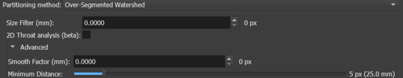 |
|---|
| Figura 8: opções de separação da região porosa em diferentes instâncias de poros e cálculo de suas propriedades geológicas. |
Depois de todos os parâmetros e opções de entrada definidos, pressione o botão Apply para geração dos resultados.
6. Saída
Um diretório de saída também deve ser especificado. Nele, é criado um sub-diretório pores, dentro do qual é criada uma pasta para cada imagem processada, herdando o nome da imagem. Dentro dessa pasta, são criados três arquivos:
AllStats_<nome-da-imagem>_pores.xlsx: planilha contendo os valores das propriedades geológicas de cada instância detectada;GroupsStats_<nome-da-imagem>_pores.xlsx: agrupa as instâncias detectadas por similaridade de área e disponibliza diversas estatísticas descritivas calculadas sobre as propriedades desses grupos;<nome-da-imagem>.png: imagem que destaca as instâncias detectadas na imagem original colorindo-as aleatoriamente.
Em cada sub-diretório também é criada uma pasta LAS, contendo arquivos .las que sumarizam estatísticas descritivas das instâncias do poço inteiro, separadas por profundidade.
Finalmente, também são geradas imagens netCDF dos resultados. Elas estarão contidas no sub-diretório netCDFs.
Exemplo:
Diretório_saída
|__ pores
| |__ LAS
| | |_ las_max.las
| | |_ las_mean.las
| | |_ las_median.las
| | |_ las_min.las
| | |_ las_std.las
| |__ ABC-123_3034.00m_2.5x_c1
| | |__ AllStats_ABC-123_3034.00m_2.5x_c1_pores.xlsx
| | |__ GroupsStats_ABC-123_3034.00m_2.5x_c1_pores.xlsx
| | |__ ABC-123_3034.00m_2.5x_c1.png
| |__ ...
|__ netCDFs
|__ ABC-123_3034.00m_2.5x_c1.nc
|__ ...
Defina o diretório de saída através no seletor Output directory na seção Output. Caso inexistente, o diretório é criado automaticamente.
| 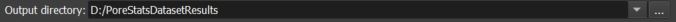 |
|---|
| Figura 9: seletor do diretório de saída. |
Escolha se deseja ou não gerar os relatórios de saída através das caixas de seleção Export images, Export sheets e Export LAS na seção Parameters. Caso marcadas, garantem respectivamente a geração da imagem ilustrando as instâncias, das planilhas de propriedades e estatísticas e dos arquivos LAS de descrição do poço.
| 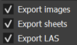 |
|---|
| Figura 10: exportação opcional das ilustrações das instâncias detectadas, das planilhas de propriedades e estatísticas e dos arquivos LAS de estatísticas por profundidade. |